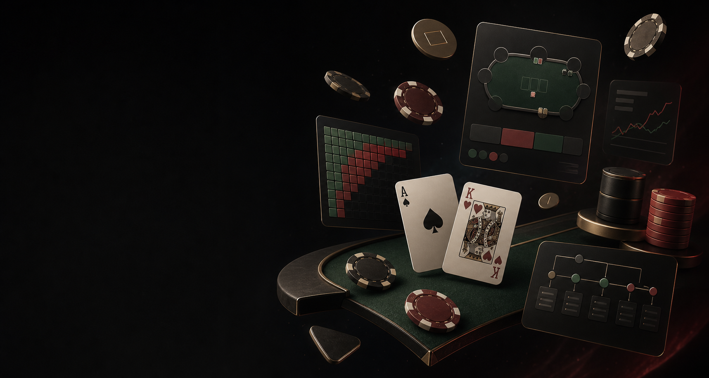

메인 코치가 앞에 서는 구조
코치의 검증 가능한 경력, 샘플 강의, 리뷰 기준을 먼저 보여주고 강의로 연결합니다.
Two Pair Poker Camp · Coach-Led Training
검증된 코치진과의 1:1 투페어 트레이닝
저희 투페어 포커캠프는 검증되지 않고 혼잡한 포커 정보과잉 속에서 빠르게 위닝 플레이어가 되는 방법을 제시합니다.

투페어 포커캠프는 강의 목록을 쌓는 사이트가 아니라, 코치의 기준으로 핸드를 해석하고 다음 훈련 과제를 정리하는 한국형 포커 캠프입니다.
코치의 검증 가능한 경력, 샘플 강의, 리뷰 기준을 먼저 보여주고 강의로 연결합니다.
프리플랍, 팟오즈, 실전 복기표는 무료로 열고, 라이브 홀덤·MTT·ICM은 심화 트랙으로 설계합니다.
결과보다 액션의 이유를 점검합니다. 포지션, 스택, 상대 성향에 따라 같은 핸드도 다른 답을 찾습니다.
강의를 본 뒤 끝내지 않고, 주간 핸드 토론과 라이브 리뷰로 같은 실수를 줄입니다.
실제 이름과 성과가 확정되면 이 영역에 바로 반영합니다. 허위 수상 경력이나 보장성 표현 없이, 코치별 전문 영역과 검증 자료가 먼저 보이도록 설계했습니다.
홀덤펍, 라이브 캐시, 로컬 대회에서 반복되는 익스플로잇 스팟 담당.
숏스택, 버블, 새틀라이트, 파이널테이블 의사결정 담당.
레인지 설계, 3벳/4벳, BB 방어, 실전 조정 기준 담당.
투페어 포커캠프는 단순 강의 목록이 아니라, 실제 플레이 기록을 기반으로 다음 훈련 과제를 정리하는 캠프형 학습 구조를 지향합니다.

포지션, 스택, 액션, 보드를 정리해 애매했던 스팟을 남깁니다.
프리플랍, 사이징, 턴 계획, 리버 의사결정의 흔들린 지점을 찾습니다.
반복되는 패턴에 맞춰 강의, 복기표, 라이브 리뷰 참여 순서를 제안합니다.
예습은 무료 강의로, 깊이는 유료 트랙으로, 적용은 핸드 진단과 라이브 리뷰로 이어집니다. 각 기능은 독립된 상품이 아니라 하나의 훈련 루프로 연결됩니다.
처음 들어온 플레이어가 바로 확인할 수 있는 오픈 레인지, 복기표, 숏스택 체크리스트.
라이브 홀덤, MTT & ICM, 프리플랍 시스템, 멘탈·뱅크롤을 코치별 트랙으로 구성.
월간 세미나, Q&A, 멤버 핸드 리뷰를 통해 강의 내용을 실제 스팟으로 다시 확인.
첫 무료 진단 이후 반복되는 누수, 추천 강의, 다음 복기 과제를 짧게 정리.
처음부터 결제를 강요하지 않습니다. 무료 강의로 캠프의 관점을 확인하고, 필요한 플레이 영역만 유료 커리큘럼으로 확장합니다.
예시 페이지처럼 월 구독/연 구독 구조로 확장할 수 있도록, 현재 메인에는 무료 입문과 유료 캠프의 차이를 명확히 보여주는 선택지를 배치했습니다.
애매했던 콜, 놓친 밸류, 무리한 블러프를 한 번에 정리합니다. 폼 제출은 현재 데모 상태이며, 실제 서비스 연결 전까지 외부로 전송되지 않습니다.
실전 복기와 다음 세션 준비에 쓰기 좋은 자료를 한 화면에서 정리했습니다.
결과가 아니라 액션의 이유를 복기합니다. 왜 베팅했는지, 다음 스트릿에서 무엇을 할지, 상대 성향에 따라 어떤 플랜을 버릴지까지 같이 정리합니다.
복기방 입장하기캠프 멤버는 주간 핸드 토론, 자료 업데이트, 라이브 리뷰 알림을 한곳에서 확인합니다.
무료 자료, 유료 강의, 라이브 리뷰, 책임 고지까지 메인 전환 전에 필요한 정보를 짧게 정리했습니다.
네. 무료 강의는 캠프의 기준과 코치 스타일을 확인하는 용도입니다. 프리플랍, 숏스택, 복기표처럼 바로 적용 가능한 주제부터 제공합니다.
유료 트랙은 코치별 커리큘럼, 라이브 리뷰, 핸드 진단 후 추천 과제까지 연결되는 심화 학습용입니다.
라이브 필드에서 자주 나오는 림프, 멀티웨이, 콜링 성향, 사이징 조정까지 다루는 트랙을 전면에 둡니다.
보장하지 않습니다. 투페어 포커캠프는 만 19세 이상 성인을 위한 교육 및 전략 콘텐츠이며, 도박 참여를 권장하지 않습니다.
애매했던 한 핸드를 남기면, 지금 가장 먼저 고쳐야 할 판단 기준부터 정리합니다.